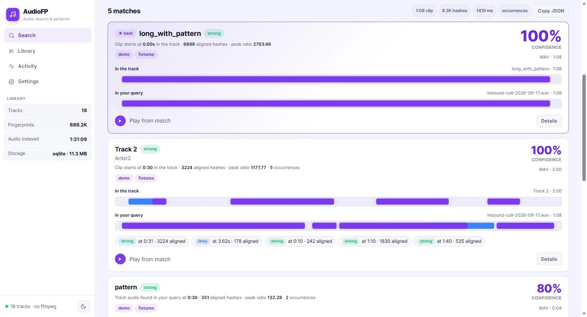
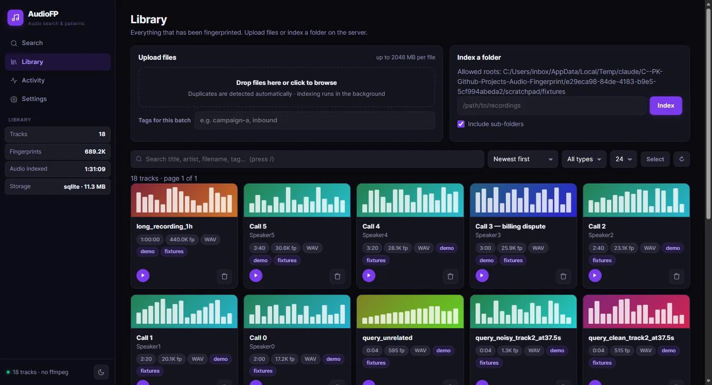
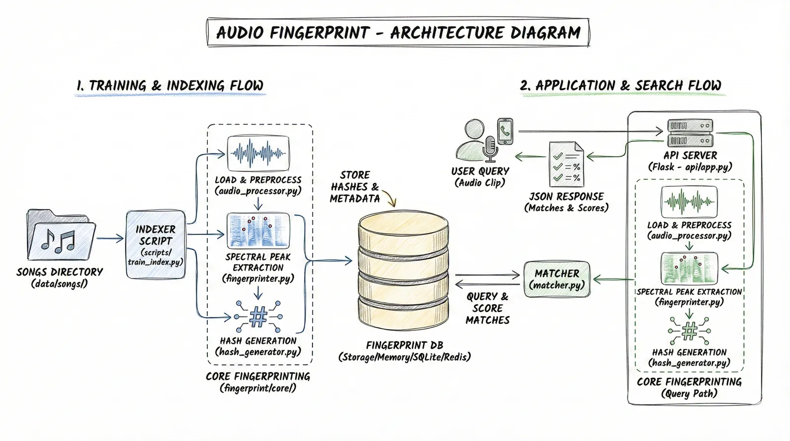

AudioFP
Project Overview
AudioFP is a self-hosted audio fingerprinting platform. You upload your audio or video files into a library, and then you can search that library using any short clip. The system identifies which file the clip belongs to and tells you exactly where in the original recording it appears.
It works without any cloud service, transcription, or API keys. The entire pipeline runs locally. Think of it as a private version of Shazam that you fully control and can build on top of.
Why I Built This
I wanted to deeply understand how audio fingerprinting actually works under the hood. Tools like Shazam are impressive, but the algorithm behind them is rarely explained in a way that is practical to implement.
This project started as a side project to read the original Wang (2003) research paper, implement the algorithm from scratch, and then wrap it into something usable. The goal was to learn by doing and then share the result as a clean, working reference for anyone else curious about the same problem.
There was no commercial motivation. It was purely about understanding, building, and sharing.
The Problem
If you have a large collection of audio or video files, finding where a specific sound or song clip appears is not straightforward. Standard text search cannot help, and most cloud-based tools require you to send your files to an external service.
AudioFP solves this locally. You index your own files once, and after that you can take any short clip - even 3 seconds with background noise - and instantly find its match across thousands of files. No data leaves your machine.
It also addresses a knowledge gap: most explanations of audio fingerprinting stop at theory. This project shows a full working implementation in Python that developers can read, run, and learn from.
Key Features
3-Second Identification
Identifies audio from clips as short as 3 seconds, even with background noise
Exact Timestamp
Shows the exact position in the original file where the clip comes from
Audio & Video Support
Supports MP3, WAV, FLAC, MP4, MKV, and more - audio extracted automatically via FFmpeg
Multiple Backends
SQLite, PostgreSQL, and in-memory storage backends with pluggable architecture
- Batch indexing runs in the background with live progress tracking
- REST API for programmatic access to all features
- Clean web interface with drag-and-drop upload, dark mode, and library management
- Fully local - no cloud services, no API keys, no data leaves your machine
Screenshots
Audio Library (Light Mode)

Audio Search

Audio Library (Dark Mode)

Architecture

How It Works
The system follows two main flows:
Indexing (training your library)
- You upload an audio or video file, or point to a folder of files.
- The audio is loaded and resampled to 11,025 Hz for fast processing.
- A Short-Time Fourier Transform (STFT) produces a spectrogram - a time-frequency map of the audio.
- The system finds the most prominent spectral peaks in that map, forming a constellation map.
- Each peak is paired with nearby peaks to generate combinatorial hash values. Each hash encodes two frequencies and the time gap between them.
- These hashes and their time offsets are stored in the fingerprint database.
Searching
- You upload a short query clip.
- The same fingerprinting pipeline runs on the clip to produce its hashes.
- The system looks up all those hashes in the database in a single batch SQL query.
- For each candidate match, it checks whether the time offsets are consistent. A true match produces many hashes that align at the same time offset.
- The result is returned with the matched song title and the timestamp in the original recording.
Tech Stack
Backend
Audio Processing
Storage
Frontend & Testing
My Contribution
I designed and built this project end to end.
- Implemented the fingerprinting algorithm from the original Wang (2003) research paper in Python
- Built the spectral peak extraction, combinatorial hash generation, and time-offset voting logic from scratch
- Designed a pluggable storage layer with SQLite, PostgreSQL, and in-memory backends
- Tuned SQLite for concurrent read performance using WAL mode, a covering index, memory-mapped I/O, and thread-local connections
- Built the background indexing system using daemon threads and a ThreadPoolExecutor
- Wrote the REST API and single-file frontend SPA
- Set up environment-aware configuration for development and production
Challenges & Learnings
Understanding the algorithm deeply enough to implement it correctly
The Wang (2003) paper describes the approach at a high level. Translating that into code that actually produces
reliable matches required understanding why each step exists. Getting the peak extraction threshold and fan-out
value right so that the fingerprints are both noise-tolerant and not too large took several iterations.
Making SQLite fast for hash lookups at scale
A naive implementation would run one SQL query per hash. With hundreds of thousands of hashes per song, that is
completely impractical. The solution was batching all hash lookups into a single WHERE hash_value IN (...)
query, combined with a covering index so the database never touches the main table heap. Adding WAL mode and
memory-mapped I/O made concurrent reads much more reliable.
Supporting both audio and video files cleanly
Users often have audio embedded in video files. Handling this required adding FFmpeg as a decoding step before
the audio processing pipeline. Making this seamless - including detecting the file type and routing it
correctly - took more edge-case handling than expected.
Background indexing without a task queue
Running long indexing jobs without blocking the server and keeping the frontend updated on progress required
implementing job tracking using daemon threads and an in-memory job store. Getting thread safety right with
Flask's threaded mode and SQLite's per-thread connections was a good practical exercise.
Core Logic: How the Code Works
This section shows the high-level implementation of each major step in the pipeline. The full source is on GitHub.
Step 1: Load Audio (and extract from video automatically)
Any file - audio or video - goes through a single load_audio function. If it is a video, FFmpeg
strips the audio track silently before anything else runs.
def load_audio(filepath: str, sr: int = 11025) -> tuple:
if is_video_file(filepath):
return extract_audio_from_video(filepath, sr=sr)
audio, sample_rate = librosa.load(filepath, sr=sr, mono=True)
return audio, sample_rate
def extract_audio_from_video(video_path: str, sr: int = 11025) -> tuple:
subprocess.run([
"ffmpeg", "-y", "-i", video_path,
"-vn", "-acodec", "pcm_s16le",
"-ar", str(sr), "-ac", "1",
tmp_path,
])
audio, sample_rate = librosa.load(tmp_path, sr=sr, mono=True)
return audio, sample_rateStep 2: Build the Spectrogram and Extract Peaks
The audio is converted into a time-frequency spectrogram. The most prominent points in that map (local maxima above a noise threshold) are kept as the "constellation map" of the recording.
def audio_to_spectrogram(audio, n_fft=2048, hop_length=512):
stft = librosa.stft(audio, n_fft=n_fft, hop_length=hop_length)
return np.abs(stft)
def _find_spectral_peaks(spectrogram, neighborhood_size=20, min_amplitude=10):
log_spec = np.log1p(spectrogram)
local_max = maximum_filter(log_spec, size=neighborhood_size) == log_spec
above_threshold = log_spec > np.log1p(min_amplitude)
freq_idx, time_idx = np.where(local_max & above_threshold)
peaks = list(zip(time_idx, freq_idx, spectrogram[freq_idx, time_idx]))
peaks.sort(key=lambda x: x[0])
return peaksStep 3: Generate Hashes
Each peak is paired with the next fan_value peaks in time. The pair of frequencies and the time gap
between them are packed into a single integer hash. This is the fingerprint.
def generate_hashes(peaks, fan_value=10):
hashes = []
for i, (anchor_time, anchor_freq, _) in enumerate(peaks):
for j in range(1, fan_value + 1):
if i + j >= len(peaks):
break
target_time, target_freq, _ = peaks[i + j]
time_delta = target_time - anchor_time
if time_delta > 1023:
continue
hash_value = (
(int(anchor_freq) << 20) |
(int(target_freq) << 10) |
(int(time_delta) & 0x3FF)
)
hashes.append((hash_value, int(anchor_time)))
return hashesA typical 3-minute song produces roughly 100K to 500K hashes depending on the fan_value setting.
Step 4: Match a Query Clip
When a short query clip arrives, it goes through the same pipeline. Its hashes are looked up in the database in a single batch query. If a song shares the same audio segment, its hashes will align at a consistent time offset. The most common offset wins.
def match_fingerprint(query_hashes, db_store, hop_length=512, sr=11025):
hash_to_qtimes = defaultdict(list)
for hash_value, query_time, _ in query_hashes:
hash_to_qtimes[hash_value].append(query_time)
db_results = db_store.query_hashes_batch(list(hash_to_qtimes.keys()))
candidate_offsets = defaultdict(list)
for hash_value, song_id, db_time in db_results:
for query_time in hash_to_qtimes[hash_value]:
candidate_offsets[song_id].append(db_time - query_time)
scored = []
for song_id, offsets in candidate_offsets.items():
best_offset, aligned_count = Counter(offsets).most_common(1)[0]
confidence = aligned_count / len(query_hashes)
match_time_sec = best_offset * hop_length / sr
scored.append((song_id, confidence, match_time_sec))
return sorted(scored, key=lambda x: x[1], reverse=True)The key insight is that noise or partial recordings shift all shared hashes by the same constant. The offset histogram naturally surfaces the correct match.
Installation & Setup
# Clone the repository
git clone https://github.com/inboxpraveen/Audio-Fingerprint.git
cd Audio-Fingerprint
# Create a virtual environment
python -m venv venv
source venv/bin/activate # Windows: venv\Scripts\activate
# Install dependencies
pip install -r requirements.txt
# Run the app
python run.py
FFmpeg must be installed and available on your system PATH. The app starts on localhost
and opens a single-page web interface in your browser.
Future Improvements
- Add a Docker image so the setup requires no manual dependency installation
- Support PostgreSQL-backed fingerprint search at larger scale
- Add a similarity confidence score display in the UI
- Explore approximate nearest-neighbor indexing for very large libraries
- Add a CLI tool for indexing and searching without starting the web server
Closing Note
AudioFP is fully open source under the MIT license. It was built as a learning exercise and shared so that other developers, students, and AI engineers curious about audio processing can read the code, run it locally, and use it as a starting point for their own work.
If you find it useful, have questions, or want to contribute, feel free to open an issue or pull request on GitHub.